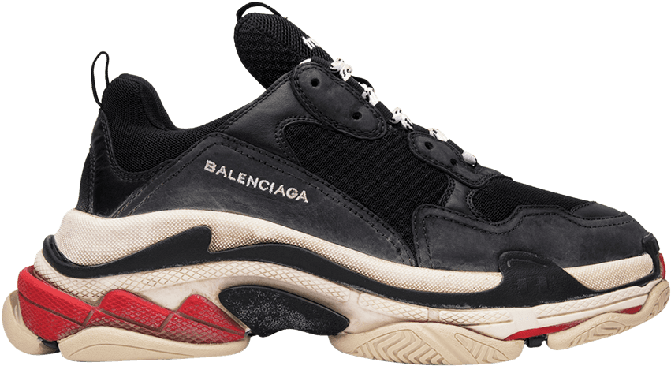

EL FÉNOMENO DEL TRIPLE-S Y SU IMPACTO
El lanzamiento de las zapatillas Triple S en 2017 marcó un momento clave en la trayectoria de Balenciaga bajo la dirección creativa de Demna Gvasalia, consolidando su reputación como una marca innovadora que redefine constantemente las normas de la moda. Estas zapatillas no solo representaron una propuesta estética disruptiva, sino que también jugaron un papel importante en el auge de la tendencia de las "dad shoes" o calzado chunky, que dominó tanto las pasarelas como el streetwear global en los años siguientes.
CARACTERISTICAS DEL DISEÑO
Estilo Oversize: Las Triple S son un ejemplo audaz de cómo el diseño puede desafiar las normas tradicionales de la moda, redefiniendo conceptos de belleza y lujo. Su estructura robusta, marcada por una suela triple superpuesta, se aleja de los modelos de calzado elegante y refinado que típicamente caracterizan a las marcas de alta gama. Este diseño exagerado y voluminoso, conocido como "chunky", se convirtió en un pilar de la estética disruptiva promovida por Demna Gvasalia.
Nostalgia: El diseño de las Triple S está profundamente inspirado en las zapatillas deportivas de los años 90, una era marcada por calzado funcional y llamativo que priorizaba el confort y la durabilidad. Al mirar las Triple S, los consumidores pueden encontrar referencias a las zapatillas que usaban en su infancia o que veían en figuras deportivas icónicas de la época. Esta sensación de nostalgia crea una conexión emocional que trasciende el diseño físico del producto, haciendo que las Triple S sean más que un simple accesorio de moda: son un puente hacia el pasado.
IMPACTO EN LA MODA
Éxito Comercial: Desde su lanzamiento en 2017, las Triple S de Balenciaga se convirtieron en uno de los productos más codiciados de la industria de la moda, consolidándose como un hito comercial en la historia reciente de la marca. Este modelo no solo redefinió las reglas del calzado de lujo, sino que también ilustró cómo la innovación y el marketing pueden impulsar las ventas a niveles extraordinarios. Las Triple S se agotaron rápidamente en las tiendas físicas y en línea tras su debut, creando listas de espera en todo el mundo. Esta demanda desbordante reflejó el deseo de los consumidores por poseer un artículo que no solo era un accesorio, sino también un símbolo de estatus.
Tendencia Viral: El impacto de las Triple S no se limitó a las tiendas; su presencia en las redes sociales las elevó al estatus de fenómeno cultural, expandiendo su influencia mucho más allá del ámbito de los entusiastas de la moda. Las Triple S han sido vistas en los pies de celebridades como Kanye West, Bella Hadid y Justin Bieber, quienes las llevaron en eventos públicos, sesiones fotográficas y momentos cotidianos, contribuyendo a su notoriedad. Estas figuras no solo reforzaron la reputación del modelo, sino que también lo posicionaron como un artículo imprescindible en el guardarropa de los amantes del streetwear y el lujo.
REVOLUCIÓN DEL CALZADO DEPORTIVO
El éxito de las Triple S de Balenciaga no solo marcó un antes y un después para la marca, sino que también tuvo un impacto profundo en la industria del calzado deportivo y de lujo. Estas zapatillas abrieron un nuevo capítulo en el diseño de calzado, popularizando una estética disruptiva que rompió con los estándares tradicionales de belleza. Las Triple S redefinieron lo que se considera deseable en el mundo del calzado de lujo. Al adoptar un diseño robusto y exagerado, a menudo descrito como "feo" pero irresistible, introdujeron el concepto de las "ugly sneakers" como un elemento clave del estilo contemporáneo. Este enfoque desafió las nociones convencionales de elegancia y minimalismo, demostrando que el lujo también puede ser audaz, experimental y deliberadamente poco convencional.